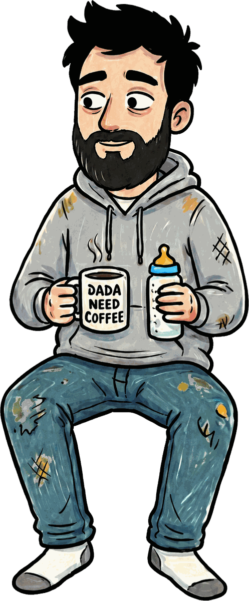

About Us
We are not experts. That is rather the point.
The Messy Parents Collection started at 3am, on a phone, one-handed, while googling a question that had a forty-minute answer when what was needed was a forty-second one.
Every parenting resource we found was either a wall of citations or a stranger on a forum shouting in capitals. Neither is much use when you are holding a baby who has been crying for an hour and you cannot remember whether you have eaten today.
What we do
We write short guides on the questions that come up over and over in the first two years: feeding, sleeping, development, health, and the state of the adults in the room. Each one takes about three minutes to read. Each one is written to be understood by someone who has slept for four hours.
Where something needs a doctor, we say so plainly and early, with a clear list of what to watch for. We would rather send you to a professional unnecessarily than have you sit at home wondering.
Who we are
Ari & Papa — one baby, two very tired adults, one sofa that has seen things. We write what we wish someone had handed us in week two, checked against current guidance from national health services and paediatric bodies, and stripped of everything that made us feel worse.
What we are not
We are not doctors, midwives, health visitors or paediatricians. Nothing here replaces advice from someone who can actually see your baby. If your instinct says something is wrong, act on it — that instinct is genuinely good information, and no one who does this professionally will mind you asking.
Start with the guides, or come back at 3am. We will be here. We will be awake.
